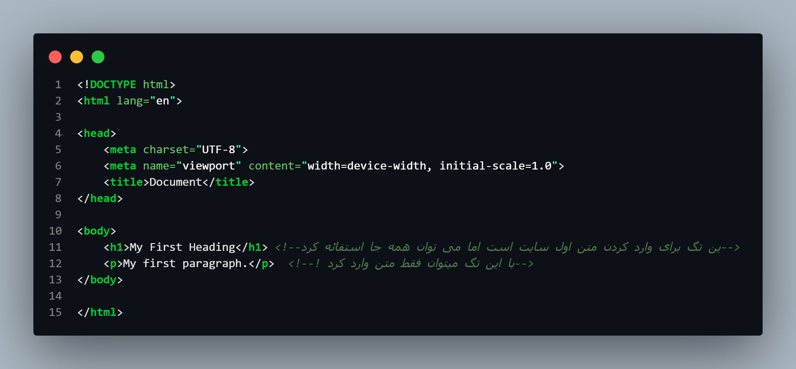
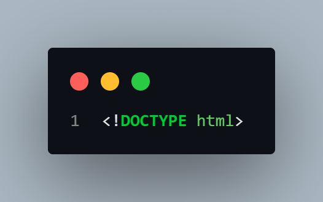
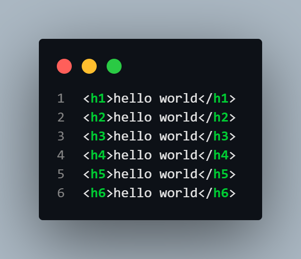
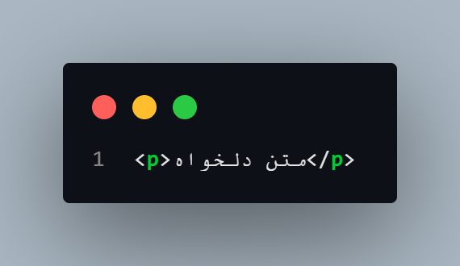
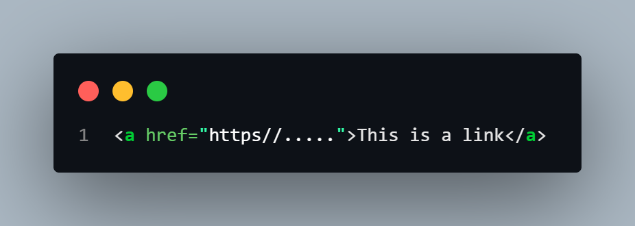
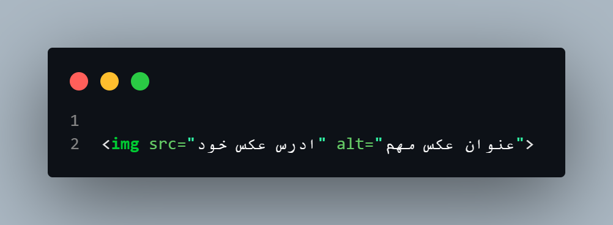

← مشاهده سرفصل ها
پایه ها (Basic)
این درس شروع آشنایی تو با HTML است. اگر تا امروز هیچ کدی ننوشتهای، مشکلی نیست. در اینجا قدمبهقدم با ساختار صفحات وب آشنا میشویم، تگهای HTML را یاد میگیریم و با مثالهای ساده میبینیم هر کدام چگونه کار میکنند. در پایان این درس باید بتوانی ساختار یک صفحه ساده را تشخیص بدهی و بفهمی تیتر، متن، لینک و تصویر چگونه در یک صفحه قرار میگیرند.
اسناد HTML (HTML Documents)
هر سند با اعلان نوع شروع می شود. سپس با تگ html آغاز و پایان می یابد. بخش قابل دیدن بین body و /body است.
حالا بیاییم این جمله را سادهتر بررسی کنیم.
وقتی یک صفحه وب میسازیم، کدهای آن را معمولاً در یک فایل ذخیره میکنیم.
این فایل میتواند پسوند .html داشته باشد.
به چنین فایلی که کدهای صفحه وب را در خود دارد،
سند HTML میگوییم.
مرورگر برنامهای است که صفحات وب را باز میکند؛ مانند Chrome، Firefox یا Edge. مرورگر کد HTML را میخواند و بر اساس آن، متنها، تیترها، لینکها و تصاویر را به کاربر نشان میدهد.
یک سند HTML معمولاً از چند بخش اصلی تشکیل میشود. در ابتدای فایل نوع سند را مشخص میکنیم، سپس بخش اصلی HTML را مینویسیم. داخل این بخش، اطلاعات صفحه و محتوای قابل مشاهده قرار میگیرند.

ساختار یک صفحه HTML را از کجا شروع کنیم؟
برای اینکه بهتر متوجه شوی، ابتدا به یک نمونه ساده نگاه کن. این کد یک صفحه HTML بسیار ساده است:
<!DOCTYPE html>
<html>
<head>
<title>صفحه من</title>
</head>
<body>
<h1>سلام دنیا</h1>
<p>این اولین صفحه من است.</p>
</body>
</html>در این کد، یک عنوان و یک متن نوشتهایم. وقتی فایل را با مرورگر باز کنی، عبارت «سلام دنیا» بهصورت یک تیتر و عبارت «این اولین صفحه من است» بهصورت یک پاراگراف نمایش داده میشود.
لازم نیست در همین ابتدا تمام کد را حفظ کنی. در ادامه هر قسمت را جداگانه بررسی میکنیم تا بفهمی چرا نوشته شده و چه کاری انجام میدهد.
۱. اعلان نوع سند
اولین خط کد این است:
<!DOCTYPE html>این خط به مرورگر اعلام میکند که سند ما از HTML مدرن استفاده میکند. به زبان ساده، به مرورگر میگوییم صفحه را با روش استاندارد امروزی بخوان.
این عبارت را معمولاً در اولین خط فایل HTML قرار میدهیم. این عبارت یک تگ معمولی نیست و خودش چیزی مانند متن یا تصویر در صفحه نمایش نمیدهد.

در کد بالا، عبارت html بعد از DOCTYPE
نشان میدهد که سند از HTML استفاده میکند.
در صفحات HTML امروزی، همین اعلان ساده کافی است.
تیترها (HTML Headings)
تیترها با h1 تا h6 هستند. h1 مهم ترین است. h6 کم اهمیت تر است.
تیتر همان عنوانی است که برای معرفی یک موضوع یا بخش از متن استفاده میکنیم. برای مثال، وقتی در یک کتاب عنوان فصل یا عنوان یک بخش را میبینی، آن عنوان به تو کمک میکند بفهمی قرار است درباره چه چیزی بخوانی. در صفحات وب نیز از تیترها برای همین کار استفاده میکنیم.
HTML شش سطح تیتر دارد.
این سطحها از h1 شروع میشوند
و تا h6 ادامه دارند.
H1 عنوان اصلی و H6 پایینترین سطح تیتر است.

چگونه از تیترها استفاده کنیم؟
برای ایجاد یک تیتر، تگ شروع و پایان همان تیتر را مینویسیم و متن عنوان را بین آنها قرار میدهیم. برای مثال:
<h1>آموزش HTML</h1>
<h2>مقدمه HTML</h2>
<h3>ساختار یک سند HTML</h3>در این مثال، عبارت «آموزش HTML» عنوان اصلی است. «مقدمه HTML» یک بخش از آن موضوع است و «ساختار یک سند HTML» زیرعنوان بخش مقدمه است.
تفاوت h1 تا h6
-
h1: عنوان اصلی صفحه؛ موضوع کلی صفحه را معرفی میکند. -
h2: عنوان بخشهای اصلی صفحه. -
h3: عنوان یک زیربخش داخل بخش H2. -
h4: عنوان یک بخش کوچکتر داخل H3. -
h5: برای عنوانهای پایینتر در صورت نیاز. -
h6: پایینترین سطح تیتر HTML.
یک مثال واقعی
تصور کن در حال نوشتن مقالهای درباره برنامهنویسی هستی. میتوانی ساختار عنوانها را به شکل زیر تنظیم کنی:
<h1>آموزش برنامهنویسی</h1>
<h2>برنامهنویسی چیست؟</h2>
<h2>زبانهای برنامهنویسی</h2>
<h3>زبان Python</h3>
<h3>زبان JavaScript</h3>در این مثال، عنوان اصلی صفحه «آموزش برنامهنویسی» است. دو بخش اصلی داریم: برنامهنویسی چیست و زبانهای برنامهنویسی. Python و JavaScript زیرمجموعه بخش زبانهای برنامهنویسی هستند.
پاراگراف ها (HTML Paragraphs)
پاراگراف با تگ «p» نوشته می شود. هر پاراگراف متن خودش را دارد.
پاراگراف بخشی از متن است که معمولاً درباره یک موضوع یا یک توضیح مشخص صحبت میکند. وقتی کتاب، مقاله یا یک صفحه اینترنتی میخوانی، متنها معمولاً به چند پاراگراف تقسیم شدهاند تا خواندن و فهمیدن آنها راحتتر باشد.
در HTML برای ساخت پاراگراف از تگ p استفاده میکنیم.
حرف P از کلمه Paragraph گرفته شده است.

ساخت یک پاراگراف
<p>
من در حال یادگیری HTML هستم.
</p>
در این کد، تگ <p>
آغاز پاراگراف را مشخص میکند.
متن داخل آن همان چیزی است که میخواهیم به کاربر نشان دهیم.
تگ </p> نیز پایان پاراگراف را مشخص میکند.
وقتی مرورگر این کد را میخواند، متن را بهعنوان یک پاراگراف نمایش میدهد. مرورگر معمولاً بین پاراگرافها مقداری فاصله قرار میدهد تا متنها از یکدیگر جدا باشند.
چند پاراگراف در یک صفحه
اگر بخواهیم چند توضیح جداگانه بنویسیم، برای هر کدام میتوانیم یک پاراگراف مستقل بسازیم:
<p>
HTML برای ساخت ساختار صفحات وب استفاده میشود.
</p>
<p>
CSS ظاهر صفحات وب را تغییر میدهد.
</p>
<p>
JavaScript به صفحات وب رفتار و تعامل اضافه میکند.
</p>در این مثال، سه پاراگراف داریم. هر پاراگراف درباره یک موضوع توضیح میدهد. جدا کردن متنها باعث میشود خواننده راحتتر آنها را دنبال کند.
لینک ها (HTML Links)
لینک با «a» ساخته می شود. «ویژگی (Attribute)» اطلاعات اضافی می دهد. «href» مقصد لینک است.
لینک یا پیوند به ما اجازه میدهد از یک صفحه به صفحه دیگر برویم. برای مثال، وقتی در یک سایت روی عبارت «تماس با ما» کلیک میکنی، ممکن است به صفحه تماس با آن سایت منتقل شوی. این انتقال با استفاده از لینک انجام میشود.
در HTML برای ساخت لینک از تگ a استفاده میکنیم.
حرف A از کلمه Anchor گرفته شده است.
آدرس مقصد لینک را با ویژگی href مشخص میکنیم.

اولین لینک HTML
<a href="https://www.google.com">
رفتن به گوگل
</a>این کد یک لینک ایجاد میکند. عبارت «رفتن به گوگل» متنی است که کاربر میبیند. وقتی روی آن کلیک کند، به آدرس نوشتهشده در ویژگی href منتقل میشود.
هر قسمت لینک چه کاری انجام میدهد؟
-
<a>: شروع لینک را مشخص میکند. -
href: آدرس مقصد لینک را مشخص میکند. -
https://www.google.com: آدرس سایتی است که میخواهیم کاربر به آن منتقل شود. -
رفتن به گوگل: متن قابل مشاهده و قابل کلیک لینک است. -
</a>: پایان لینک را مشخص میکند.
ویژگی چیست؟
ویژگی اطلاعات بیشتری درباره یک تگ در اختیار مرورگر قرار میدهد. برای مثال، تگ A به مرورگر میگوید یک لینک ایجاد کن، اما ویژگی href مشخص میکند این لینک به کجا برود.
ویژگیها معمولاً داخل تگ شروع نوشته میشوند. در مثال بالا، href داخل تگ A قرار گرفته است.
<a href="https://example.com">
سایت نمونه
</a>لینک به صفحه دیگر سایت خودمان
لینکها فقط برای رفتن به سایتهای دیگر نیستند. میتوانیم کاربر را به صفحات دیگری از سایت خودمان نیز منتقل کنیم.
فرض کن دو فایل HTML داریم:
index.html
about.htmlاگر هر دو فایل در یک پوشه باشند، میتوانیم از فایل اول به فایل دوم لینک بدهیم:
<a href="about.html">
درباره ما
</a>در این مثال، مرورگر فایل about.html را پیدا میکند و با کلیک روی لینک، آن صفحه را باز میکند.
باز شدن لینک در زبانه جدید
گاهی میخواهیم لینک در یک زبانه جدید مرورگر باز شود.
برای این کار از ویژگی target استفاده میکنیم.
<a href="https://example.com"
target="_blank"
rel="noopener noreferrer">
باز کردن سایت
</a>
ویژگی target="_blank"
معمولاً باعث میشود مقصد لینک در زبانه جدید باز شود.
ویژگی rel="noopener noreferrer"
نیز برای افزایش امنیت و کنترل اطلاعاتی که هنگام باز شدن لینک
در اختیار صفحه مقصد قرار میگیرد استفاده میشود.
تصاویر (HTML Images)
تصویر با «img» می آید. «src» مسیر فایل است. «alt» متن جایگزین است. «width» و «height» اندازه ها هستند.
تصاویر به ما کمک میکنند اطلاعات را به شکل دیداری نمایش دهیم. برای مثال، در یک سایت آموزشی میتوانیم از تصویر یک نمونه کد، نمودار، عکس یا شکل آموزشی استفاده کنیم.
برای نمایش تصویر در HTML از تگ img استفاده میکنیم.
این تگ به مرورگر میگوید یک تصویر را در این قسمت صفحه نمایش بده.

اولین تصویر HTML
<img src="photo.jpg"
alt="تصویر یک گل">
در این مثال، مرورگر به دنبال فایلی با نام
photo.jpg
میگردد و در صورت پیدا کردن آن، تصویر را نمایش میدهد.
ویژگی src چیست؟
src مخفف Source است.
این ویژگی مسیر یا آدرس فایل تصویر را مشخص میکند.
اگر مسیر را درست وارد نکنیم،
مرورگر نمیتواند تصویر مورد نظر را پیدا کند.
مسیر تصویر چگونه نوشته میشود؟
فرض کن فایل HTML و تصویر در یک پوشه قرار دارند:
project/
├── index.html
└── photo.jpgدر این حالت میتوانیم نام تصویر را مستقیماً بنویسیم:
<img src="photo.jpg"
alt="تصویر نمونه">حالا فرض کن تصویر داخل پوشهای به نام images قرار گرفته است:
project/
├── index.html
└── images/
└── photo.jpgچون تصویر داخل پوشه images است، باید نام پوشه را نیز در مسیر بنویسیم:
<img src="images/photo.jpg"
alt="تصویر نمونه">ویژگی alt چیست؟
ویژگی alt توضیحی درباره تصویر مینویسد.
این توضیح در بعضی شرایط به جای خود تصویر استفاده میشود؛
مثلاً زمانی که تصویر بارگذاری نمیشود
یا فرد از ابزار خواندن صفحه استفاده میکند.
ابزار خواندن صفحه نرمافزاری است که محتوای صفحه را برای افرادی که ممکن است نتوانند صفحه را بهخوبی ببینند، با صدا میخواند. متن alt میتواند به این افراد کمک کند مفهوم تصویر را متوجه شوند.
<img src="cat.jpg"
alt="گربهای که روی صندلی نشسته است">در این مثال، اگر تصویر نمایش داده نشود، توضیح «گربهای که روی صندلی نشسته است» میتواند به کاربر بگوید تصویر چه چیزی را نشان میداد.
ویژگی width و height
برای مشخص کردن عرض و ارتفاع تصویر میتوان از
width و height استفاده کرد.
عرض یعنی اندازه افقی تصویر و ارتفاع یعنی اندازه عمودی آن.
<img src="photo.jpg"
alt="تصویر نمونه"
width="400"
height="300">در این مثال عرض تصویر ۴۰۰ و ارتفاع آن ۳۰۰ است. این اعداد در HTML معمولاً بر اساس پیکسل در نظر گرفته میشوند.
اگر اندازه تصویر را تغییر دهی، بهتر است نسبت عرض به ارتفاع آن را حفظ کنی تا تصویر کشیده یا فشرده نشود.
اگر تصویر نمایش داده نشد چه کنیم؟
- نام فایل را بررسی کن.
- پسوند تصویر را بررسی کن؛ مثلاً jpg، png یا webp.
- بررسی کن تصویر در پوشه درست قرار دارد.
- مسیر نوشتهشده در src را با مسیر واقعی فایل مقایسه کن.
- به حروف بزرگ و کوچک نام فایل توجه کن.
دیدن سورس HTML
کلید CTRL + U را بزن. یا راست کلیک کن و View Page Source را انتخاب کن.
سورس HTML همان کدهای HTML صفحه است. با مشاهده سورس میتوانیم بفهمیم یک صفحه وب چگونه با تگها و عناصر HTML ساخته شده است.
برای مثال، اگر در یک سایت عنوانی را ببینی، میتوانی سورس صفحه را باز کنی و جستوجو کنی که آن عنوان با کدام تگ نوشته شده است.
روش اول: استفاده از کلیدهای میانبر
در مرورگر Chrome معمولاً میتوانی کلیدهای
Ctrl + U
را همزمان فشار بدهی.
صفحهای باز میشود که سورس HTML آن صفحه را نشان میدهد.
روش دوم: راستکلیک
روی صفحه راستکلیک کن و گزینه
View Page Source
را انتخاب کن.
این گزینه سورس صفحه را باز میکند.
Inspect چیست؟
برای بررسی دقیق، راست کلیک کن و Inspect را بزن. سپس ساختار HTML و CSS را می بینی.
ابزار Inspect بخشی از ابزارهای توسعهدهندگان مرورگر است. با استفاده از آن میتوانیم عناصر HTML صفحه، استایلهای CSS و بعضی اطلاعات دیگر را بررسی کنیم.
برای مثال، اگر بخواهی بفهمی یک دکمه چگونه ساخته شده است، میتوانی روی آن راستکلیک کنی، Inspect را انتخاب کنی و کد مربوط به آن دکمه را ببینی.
تفاوت View Page Source و Inspect
View Page Source بیشتر کد اولیهای را نشان میدهد که مرورگر برای ساخت صفحه دریافت کرده است. Inspect ساختار فعلی صفحه را نشان میدهد و امکان بررسی عناصر و استایلها را فراهم میکند.
در بعضی سایتها، JavaScript بعد از باز شدن صفحه، بخشهای جدیدی به صفحه اضافه میکند. به همین دلیل ممکن است چیزی که در Inspect میبینی با سورس اولیه تفاوت داشته باشد.
یادگیری بهتر html
برای تمرین بیشتر به ویرایشگرها سر بزن. سپس بخش المان ها را بخوان. اگر لازم شد، به HTML پایه برگرد و مرور کن.
ویرایشگر کد یک برنامه است که به کمک آن میتوانیم کدهای برنامهنویسی را بنویسیم، مرتب کنیم و ذخیره کنیم. برای شروع HTML به یک ویرایشگر متن یا کد و یک مرورگر نیاز داریم.
بعد از نوشتن کد، فایل را ذخیره کن و آن را با مرورگر باز کن. سپس تغییراتی در کد ایجاد کن و دوباره نتیجه را ببین. این روش کمک میکند بفهمی هر تگ چه اثری روی صفحه دارد.
اگر هنوز تفاوت تگها، ویژگیها یا ساختار سند برایت روشن نیست، به همین درس برگرد و مثالها را دوباره اجرا کن. یادگیری برنامهنویسی با تمرین و تکرار بهتر میشود.
تمرین عملی این درس
حالا که با ساختار HTML، تیتر، پاراگراف، لینک و تصویر آشنا شدی، یک صفحه ساده برای خودت بساز. هدف این تمرین این است که تگهایی را که یاد گرفتهای در یک فایل واقعی استفاده کنی.
-
یک فایل به نام
index.htmlبساز. - ساختار اصلی HTML را در فایل بنویس.
- یک تیتر اصلی درباره خودت قرار بده.
- دو پاراگراف درباره علاقههایت بنویس.
- یک لینک به یک سایت مورد علاقهات اضافه کن.
- یک تصویر در صفحه قرار بده.
- برای تصویر یک توضیح مناسب در Alt بنویس.
- فایل را ذخیره کن و با مرورگر باز کن.
نمونهای از نتیجه تمرین
<!DOCTYPE html>
<html lang="fa" dir="rtl">
<head>
<meta charset="UTF-8">
<title>درباره من</title>
</head>
<body>
<h1>سلام، من در حال یادگیری HTML هستم</h1>
<p>
من به برنامهنویسی و طراحی سایت علاقه دارم.
</p>
<p>
میخواهم با یادگیری HTML
صفحات وب خودم را بسازم.
</p>
<a href="https://example.com">
مشاهده سایت نمونه
</a>
<img src="photo.jpg"
alt="تصویر نمونه">
</body>
</html>در این مثال، یک صفحه ساده درباره خودمان ساختهایم. تیتر با H1، متنها با P، لینک با A و تصویر با IMG ایجاد شدهاند.
توجه کن که برای نمایش تصویر باید فایل
photo.jpg
را در مسیر مناسب قرار بدهی.
اگر تصویر در پوشه دیگری است، مسیر آن را در src اصلاح کن.
سؤالات متداول درباره HTML
HTML چیست؟
HTML زبان نشانهگذاری است که برای مشخص کردن ساختار و محتوای صفحات وب استفاده میشود. با آن میتوان تیتر، متن، لینک، تصویر و بخشهای مختلف صفحه را ایجاد کرد.
آیا HTML زبان برنامهنویسی است؟
HTML زبان نشانهگذاری است. بهتنهایی مانند زبانهای برنامهنویسی منطق، شرط و حلقه اجرا نمیکند، بلکه ساختار محتوای صفحه را مشخص میکند.
برای یادگیری HTML به چه چیزی نیاز دارم؟
برای شروع به یک ویرایشگر کد یا متن، یک مرورگر و کمی تمرین نیاز داری. لازم نیست قبل از یادگیری HTML زبان برنامهنویسی دیگری بلد باشی.
تگ H1 و H2 چه تفاوتی دارند؟
H1 عنوان اصلی صفحه را مشخص میکند. H2 برای عنوان بخشهای اصلی صفحه استفاده میشود. اگر یک بخش H2 زیرعنوان داشته باشد، معمولاً از H3 برای آن استفاده میکنیم.
تگ P چه کاربردی دارد؟
تگ P برای مشخص کردن یک پاراگراف استفاده میشود. متنهای توضیحی صفحه را میتوان در پاراگرافهای جداگانه قرار داد.
ویژگی href چیست؟
href آدرس مقصد یک لینک را مشخص میکند. وقتی کاربر روی لینک کلیک کند، مرورگر از این آدرس برای رفتن به مقصد استفاده میکند.
ویژگی src در تصویر چه کاری انجام میدهد؟
src مسیر فایل تصویر را مشخص میکند. مرورگر با استفاده از این مسیر تصویر را پیدا میکند و آن را در صفحه نمایش میدهد.
Alt در تصویر چه اهمیتی دارد؟
Alt توضیح متنی تصویر است. این توضیح در صورت نمایش ندادن تصویر و برای ابزارهای کمکی میتواند مفید باشد.
چگونه کد HTML یک سایت را ببینم؟
در مرورگر Chrome میتوانی Ctrl + U را فشار بدهی یا راستکلیک کنی و View Page Source را انتخاب کنی. برای بررسی عناصر صفحه نیز از Inspect استفاده کن.
جمعبندی این درس
در این درس با HTML و کاربرد آن آشنا شدی. فهمیدی یک صفحه HTML از بخشهای مختلف تشکیل میشود و مرورگر کدهای آن را میخواند تا صفحه را نمایش دهد.
همچنین یاد گرفتی تیترها با H1 تا H6، پاراگرافها با P، لینکها با A و تصاویر با IMG ساخته میشوند.
ویژگیهایی مانند href، src، alt، width و height اطلاعات بیشتری درباره عناصر HTML در اختیار مرورگر قرار میدهند.
حالا میتوانی یک صفحه ساده بسازی، آن را در مرورگر باز کنی و با مشاهده سورس یا Inspect ساختار صفحات دیگر را نیز بررسی کنی.
برای ادامه یادگیری، به صفحه سرفصلهای آموزشی برگرد و درس بعدی را دنبال کن.